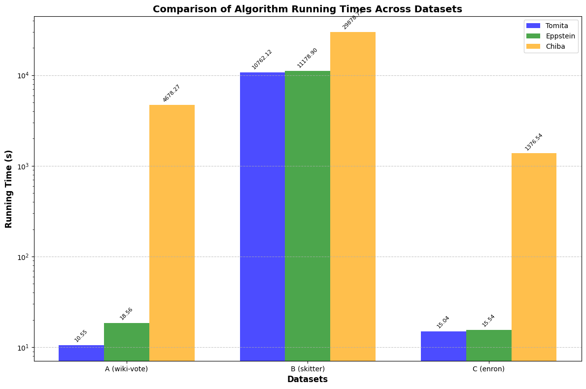

Implementation and Comparative Analysis of Three Algorithms
This project implements and analyzes three different algorithms for maximal clique enumeration in graphs:
Maximal clique enumeration is a fundamental problem in graph theory with applications in social network analysis, bioinformatics, and data mining. This project explores different approaches to solving this problem efficiently.
"The worst-case time complexity for generating all maximal cliques and computational experiments" by Tomita, Tanaka, and Takahashi.
Implementation of procedure CLIQUE at page 31 of the paper.
Tomita's algorithm is an improvement over the classic Bron-Kerbosch algorithm for enumerating all maximal cliques in a graph. The key enhancement is the pivot selection strategy, which significantly reduces the number of recursive calls.
CLIQUE(R, P, X):
if P is empty and X is empty:
report R as a maximal clique
return
choose a pivot vertex u from P ∪ X to maximize |P ∩ N(u)|
for each vertex v in P \ N(u):
CLIQUE(R ∪ {v}, P ∩ N(v), X ∩ N(v))
P = P \ {v}
X = X ∪ {v}
My implementation focuses on efficient set operations and pivot selection. Key features include:
void TomitaMaximalClique(vector<int> R, vector<int> P, vector<int> X) {
if (P.empty() && X.empty()) {
reportMaximalClique(R);
return;
}
// Select pivot vertex
int pivot = selectPivot(P, X);
// Get non-neighbors of pivot in P
vector<int> P_minus_N_pivot = getNonNeighbors(P, pivot);
for (int v : P_minus_N_pivot) {
vector<int> R_new = R;
R_new.push_back(v);
vector<int> P_new = intersection(P, getNeighbors(v));
vector<int> X_new = intersection(X, getNeighbors(v));
TomitaMaximalClique(R_new, P_new, X_new);
// Move v from P to X
P = removeElement(P, v);
X.push_back(v);
}
}
"Listing All Maximal Cliques in Sparse Graphs in Near-Optimal Time" by Eppstein, Löffler, and Strash.
Implementation of procedure BronkerboschDegeneracy(V,E) (Fig. 4).
Eppstein's algorithm leverages the concept of graph degeneracy to efficiently enumerate maximal cliques. It uses a degeneracy ordering to process vertices, which provides a theoretical speedup for sparse graphs.
BronkerboschDegeneracy(V, E):
compute a degeneracy ordering v₁, v₂, ..., vₙ of the vertices
for i = n downto 1:
P = {vⱼ | j > i and vⱼ is adjacent to vᵢ}
X = {vⱼ | j < i and vⱼ is adjacent to vᵢ}
BronKerbosch2({vᵢ}, P, X)
BronKerbosch2(R, P, X):
if P and X are empty:
report R as a maximal clique
choose a pivot vertex u from P ∪ X
for each vertex v in P \ N(u):
BronKerbosch2(R ∪ {v}, P ∩ N(v), X ∩ N(v))
P = P \ {v}
X = X ∪ {v}
The key feature of my implementation is the efficient computation of degeneracy ordering and the modified BronKerbosch algorithm. Specific optimizations include:
void BronkerboschDegeneracy(Graph& G) {
// Compute degeneracy ordering
vector<int> ordering = computeDegeneracyOrdering(G);
for (int i = ordering.size() - 1; i >= 0; i--) {
int v = ordering[i];
// P = neighbors of v with higher ordering
vector<int> P;
for (int u : G.getNeighbors(v)) {
if (getOrderPosition(ordering, u) > getOrderPosition(ordering, v)) {
P.push_back(u);
}
}
// X = neighbors of v with lower ordering
vector<int> X;
for (int u : G.getNeighbors(v)) {
if (getOrderPosition(ordering, u) < getOrderPosition(ordering, v)) {
X.push_back(u);
}
}
vector<int> R = {v};
BronKerbosch2(R, P, X);
}
}
void BronKerbosch2(vector<int> R, vector<int> P, vector<int> X) {
if (P.empty() && X.empty()) {
reportMaximalClique(R);
return;
}
int pivot = selectPivot(P, X);
vector<int> P_minus_N_pivot = getNonNeighbors(P, pivot);
for (int v : P_minus_N_pivot) {
vector<int> R_new = R;
R_new.push_back(v);
vector<int> P_new = intersection(P, getNeighbors(v));
vector<int> X_new = intersection(X, getNeighbors(v));
BronKerbosch2(R_new, P_new, X_new);
P = removeElement(P, v);
X.push_back(v);
}
}
"Arboricity and Subgraph Listing Algorithms" by Chiba and Nishizeki.
Implementation of procedure CLIQUE (pages 220:222).
Chiba & Nishizeki's algorithm is designed to work efficiently on graphs with low arboricity. It performs recursive enumeration with a focus on space efficiency and leverages the arboricity properties of the graph.
CLIQUE(G):
Sort vertices in non-increasing order of degree: v₁, v₂, ..., vₙ
for i = 1 to n:
G' = subgraph of G induced by {vᵢ, vᵢ₊₁, ..., vₙ}
for each maximal clique K in G' containing vᵢ:
output K
remove vᵢ from G
My implementation focuses on efficient graph construction and clique enumeration. Key features include:
void ChibaNishizekiClique(Graph& G) {
// Sort vertices by degree (non-increasing)
vector<int> vertices = sortVerticesByDegree(G);
Graph currentGraph = G;
for (int i = 0; i < vertices.size(); i++) {
int v = vertices[i];
// Find all maximal cliques containing v
vector<int> R = {v};
vector<int> P = getHigherOrderNeighbors(currentGraph, v, vertices, i);
vector<int> X = getLowerOrderNeighbors(currentGraph, v, vertices, i);
FindMaximalCliques(R, P, X);
// Remove v from the current graph
currentGraph.removeVertex(v);
}
}
void FindMaximalCliques(vector<int> R, vector<int> P, vector<int> X) {
if (P.empty() && X.empty()) {
reportMaximalClique(R);
return;
}
if (P.empty()) return;
int u = P[0]; // Select first vertex from P
// Add u to the current clique
vector<int> R_with_u = R;
R_with_u.push_back(u);
// Neighbors of u in P and X
vector<int> P_cap_N_u = intersection(P, getNeighbors(u));
vector<int> X_cap_N_u = intersection(X, getNeighbors(u));
FindMaximalCliques(R_with_u, P_cap_N_u, X_cap_N_u);
// Exclude u
P = removeElement(P, u);
X.push_back(u);
FindMaximalCliques(R, P, X);
}
Performance testing was conducted using the following real-world complex networks:
This network represents communication patterns from approximately 500,000 emails made public during federal investigations. Nodes represent email addresses, with undirected edges representing at least one email exchange between addresses. Non-Enron addresses act as network endpoints, while the dataset preserves original communication patterns between Enron employees.
This large-scale network graph represents internet infrastructure topology based on 2005 traceroute data from CAIDA's Skitter project. It captures routing paths between multiple sources and millions of destinations, providing a comprehensive view of global internet connectivity patterns at scale.
This directed network captures voting patterns from 2,794 Wikipedia administrator elections between 2003-2008. Nodes represent users, with directed edges indicating votes cast (from voter to candidate). The dataset includes both successful promotions (1,235 elections) and unsuccessful attempts (1,559 elections).
The following table shows the runtime comparison of the three algorithms on different datasets:
| Algorithm | Enron Email Network (s) | CAIDA Topology (s) | Wikipedia Elections (s) |
|---|---|---|---|
| Tomita et al. | 15.049 | 10,767.12 | 10.549 |
| Eppstein et al. | 15.540 | 11,178.9 | 18.652 |
| Chiba & Nishizeki | 1376.54 | 29878.7 | 4678.27 |
The graph below visualizes the runtime performance of each algorithm across the three datasets:
| Dataset | Number of Maximal Cliques |
|---|---|
| Enron Email Network | 20 |
| CAIDA Internet Topology | 67 |
| Wikipedia Elections | 17 |
Based on the experimental results, several key observations can be made:
Memory consumption varied significantly between implementations:
When scaling to larger datasets:
The structure of each network significantly influenced algorithm performance:
This project implemented and compared three algorithms for maximal clique enumeration on real-world complex networks. The key findings include:
Potential areas for future work include:
The complete source code for this project is available on GitHub: